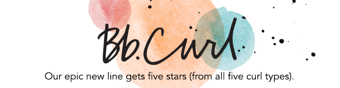

<!DOCTYPE html>
<html>
<head>
	<link rel="stylesheet" type="text/css" href="style.css">
	<title> home page </title>
</head>
<body>
	<footer>
		<p>
	<h2  class="title">  <em>The  best hair products</em> </h2>

	<p class="p" > What you use on your hair is extremly important. It is always better to use products of the same brand but we also reccomend to find multiple brands of which products go well on your hair and not use the the same brand two or more times in a row. Shampoo, conditioner and a mask are the three most important products to use but there are more products that can be used whilst taking care of your curly hair.Here are some of the best hair products and brands for curly hair:
  </p>

   


  


  


  

  

  <h3 class="p">  All of the brands above have special curly hair products that are proven to be very good for your hair and help make it better. </h3>


  <h2 class="title">   <em>   Useful tips and hacks</em></h2>


  <ol class="text"> <strong> 1. Always comb your hair from the bottom up. </strong>
</ol>
<ol class="text"> <strong> 2. Get regular trims to avoid split ends. </strong></ol>
<ol class="text"> <strong> 3.Use product "cocktailing" to define and hydrate curls. </strong></ol>
<ol class="text"> <strong>4. Incorporate a conditioning treatment into your regimen. </strong></ol>
<ol class="text"> <strong>5. Use a diffuser to even out your curl pattern and add more body. </strong></ol>
<ol class="text"> <strong>6. Get to know your curls. </strong> </ol>

<h2 class="title">   <em>  Here are some of the vidoes demonstrating how to take care of your curly hair properly, from Youtube</em></h2>

 <ol><a class="text" href="https://www.youtube.com/watch?v=i4QRqJquyy4" >How to wash your hair properly</a> </ol>

 <ol><a class="text" href="https://www.youtube.com/watch?v=XWrqykIcDn8"> Taming frizzy curly hair</a>  </ol>

 <ol> <a class="text" href="https://www.youtube.com/watch?v=dW5clIVnrms"> Tips form a proffesional</a></ol>
<ol> <a class="text" href=" https://www.youtube.com/watch?v=tm1G--USXIk">  How to find a product for your hair</a></ol>


	


	  <p>
	  </footer>


</body>
</html>